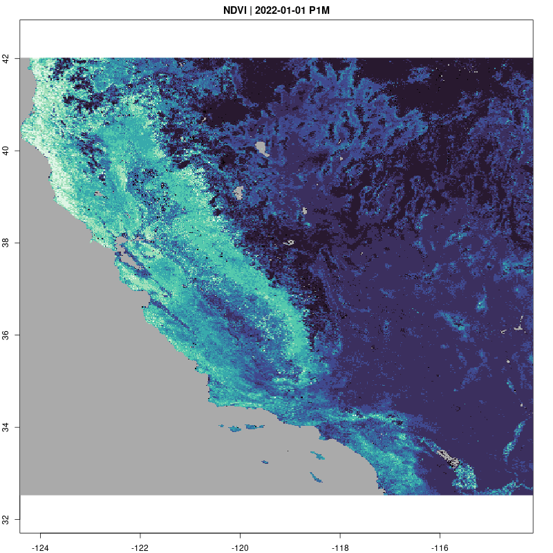

Not all data formats which NASA EarthData makes available on cloud storage are provided in cloud-optimized or even VSI-compatible formats. A stark example is HDF4. Here we illustrate how to work with these data formats while staying as close to the cloud-native workflow shown in other vignettes.
Aside: note that in many cases, these same data products may be available in cloud-native formats from other providers. Particular to the example here, see the cloud-optimized MODIS catalog on the Planetary Computer STAC.
CA <- spData::us_states |> dplyr::filter(NAME=="California")
bbox <- CA |> st_bbox()
start <- "2022-01-01"
end <- "2022-12-31"
items <- stac("https://cmr.earthdata.nasa.gov/stac/LPCLOUD") |>
stac_search(collections = "MOD13Q1.v061",
bbox = c(bbox),
datetime = paste(start,end, sep = "/")) |>
post_request() |>
items_fetch()
#>
|
|==========================================================================================================================================================================================================================================================| 100%HDF4 doesn’t support cloud (range-request-based) access / VSI.
Instead, we download all matching assets with
earthdatalogin authentication:
paths <- items$features |>
purrr::map(list("assets", "data", "href")) |>
unlist() |>
purrr::map_chr(edl_download)Rather than create an image collection using STAC metadata, we can use the recognized format and the local paths:
paths <- fs::dir_ls(".", glob="*.hdf")
col <- gdalcubes::create_image_collection(paths, format = "MxD13Q1")
# Define whatever view you like!
v = cube_view(srs = "EPSG:4326",
extent = list(t0 = as.character(start),
t1 = as.character(end),
left = bbox[1], right = bbox[3],
top = bbox[4], bottom = bbox[2]),
nx = 512, ny = 512, dt = "P1M")
raster_cube(col, v) |>
select_bands("NDVI") |>
animate(col = viridisLite::mako, fps=2,
save_as="img/ndvi.gif")
#> [1] "/home/cboettig/boettiger-lab/earthdatalogin/inst/vignette-sources/img/ndvi.gif"
library(tmap)
r <-
raster_cube(col, v) |>
select_bands("NDVI") |>
st_as_stars.cube()
tm_shape(r) + tm_raster("NDVI") +
tm_shape(CA) + tm_borders()